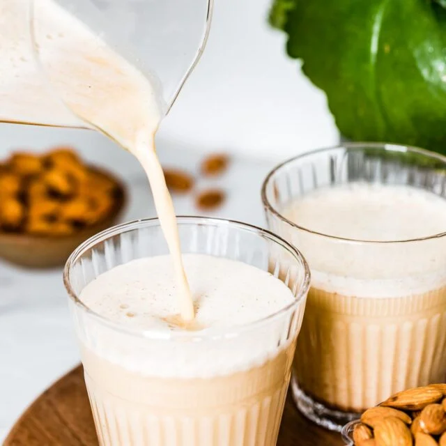

Nutmilk Drink

Description:
This nutmilk drink is not only nourishing,
but gives you energy for more hours than your traditional breakfast and is vegan!
Note: this recipe makes 6 full large glasses.
Ingredients
This list is for 6 servings
- 1 stick cinnamon (not the fake stuff)
- 15 cardomom pods with shell removed
- 6 cloves
- 200 mg brazil nuts
- 200 mg almonds
- 200 mg pecans
- 300 mg pure malt extract
This list is for your daily 2 servings
- 2-3 ripe bananas
- 2 pitted dates
- 10 slightly toasted cocoa beans (without shell)
Preparation Steps
- Blend the cardamom, cinnamon, and clove in a high-powered motor blender, until a fine spice powder.
- Add all the nuts into the spice powder, blend until blender for about 15 seconds, when it no longer can blend well.
- Add water to nutmilk blend, and blend for a few seconds.
- Repeat last step until a fine, thick nutmilk blend with water
- Fill large mason jar with malt extract.
- Add nutmilk blend to mason jar with malt.
- Add distilled or very purified water to nutmilk and malt blend and shake until malt is blended.
Continue to add water until reach top of jar.
Daily Use Steps
- Measure oh 800 mg of nutmilk in blender cup
- Add 2-3 ripe bananas and dates into nutmilk cup
- Blend until smooth
- Chill until ready to serve.